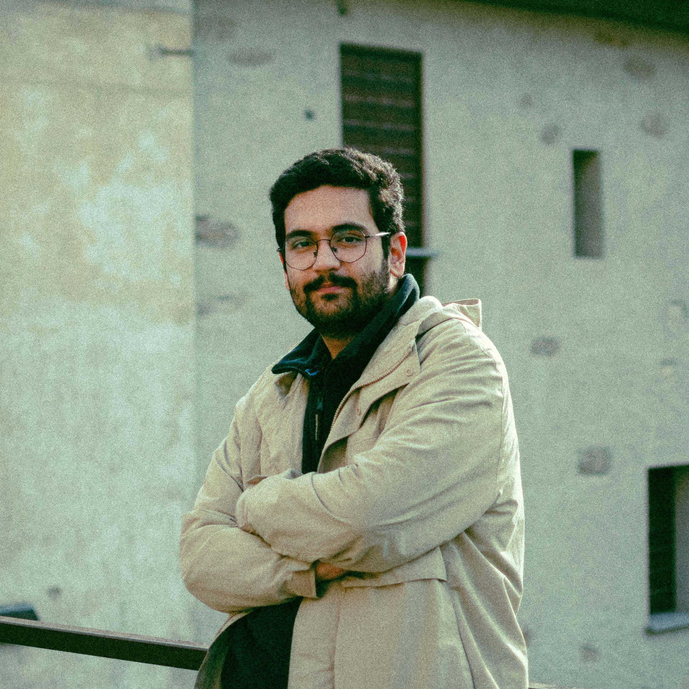

Hello! I'm Ali Lario, a photographer and videographer based in Lecco, Northern Italy.
I create visual stories for architecture, businesses, brands, portraits, and weddings, focusing on atmosphere, light, and the details that give every project its identity.
Alongside commissioned work, I pursue personal photographic projects that explore everyday moments, human presence, and the relationship between people and their surroundings. These ongoing visual journals continue to shape the way I approach every project.
Originally from Iran, I now live and work in Italy. With a background in architecture, I combine architectural thinking with visual storytelling to create images that are both carefully composed and emotionally engaging.
Available for commissions across Italy and internationally.
Clateway Media
Unafor
Inspiratia